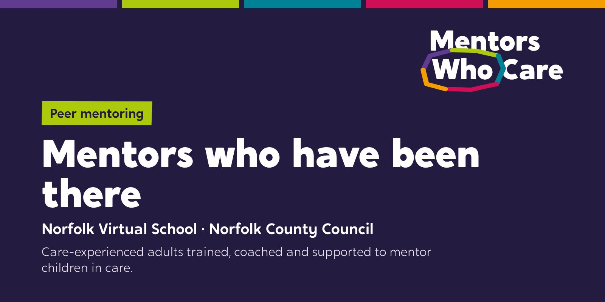

Norfolk Virtual School: mentors who have been there
Children in care asked for mentors who understand their journeys. We are building a peer mentoring scheme with Norfolk Virtual School, where care-experienced adults are trained, coached and supported to mentor children in care.

The starting point
The idea came from children in care. They told Norfolk Virtual School they wanted mentors who understood their journeys, so the virtual school set out to find care-experienced adults to be those mentors.
What it needed next was everything that turns a good idea into a safe scheme: training, a clear role, a way to match mentors with children, and support for mentors while they help someone else.
What we did
- Step 1DesignClear roles and a model for referral, matching and recording
- Step 2RecruitA role description and a campaign to find mentors
- Step 3TrainMentor training days, with coaching in between
- Step 4LaunchReadiness, first matches and handover to the virtual school
The training covers befriending and the foundations of the role, the GROW model for setting goals with a child, and safeguarding and readiness.
How we worked
Story
Every part starts with a moment from a child’s side, and with the mentors’ own stories of the adults who made a difference.
Theory
Why close, lasting relationships are what make mentoring work.
Tools
Befriending, GROW, and deciding what to share from your own story.
Mentors shape the scheme as well as join it, and the support they get is coaching, agreed with them from the start.
Where it is now
The scheme is being built now, so this is a story in progress. We will add what changed once mentoring is under way.
Norfolk is where Mentors Who Care comes from: the same approach, ready for other councils and virtual schools.